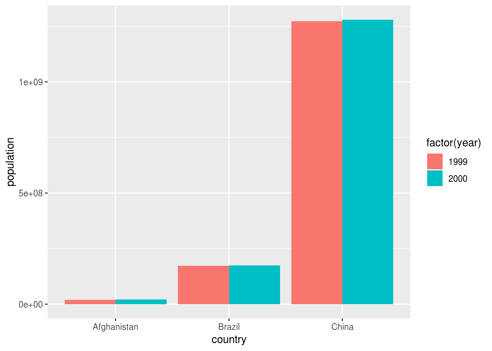
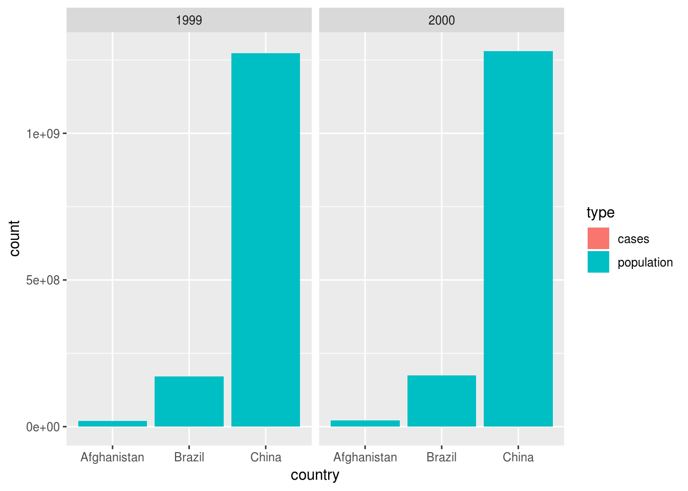
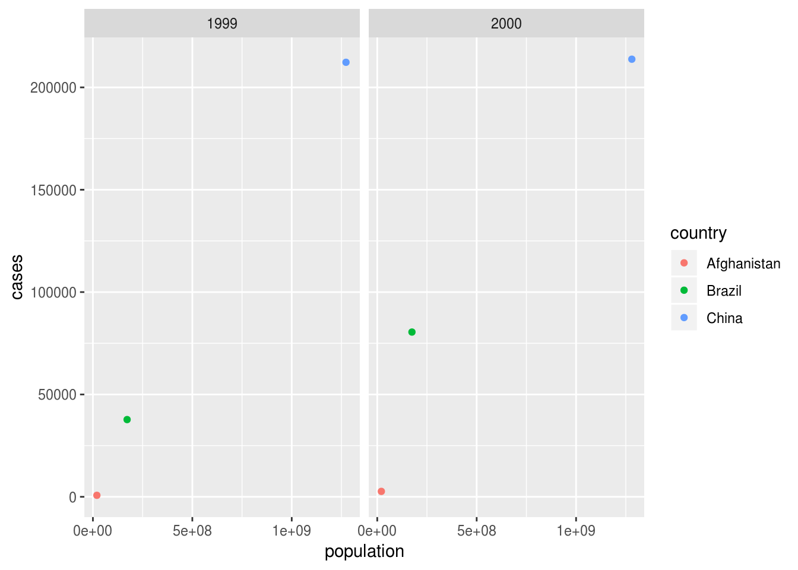

Use spread() to convert table2 to table1. What is the meaning of the key and value arguments?
table2 %>%
spread(_____)► Solution:
table2 %>%
spread(type, count)## # A tibble: 6 x 4
## country year cases population
## <chr> <int> <int> <int>
## 1 Afghanistan 1999 745 19987071
## 2 Afghanistan 2000 2666 20595360
## 3 Brazil 1999 37737 172006362
## 4 Brazil 2000 80488 174504898
## 5 China 1999 212258 1272915272
## 6 China 2000 213766 1280428583Use gather() to convert table1 to table2. Try an inclusive and an exclusive selection. Do you need an extra transformation to make the result fully identical? Can you reuse key and value from the previous result?
table1 %>%
gather(_____, ___:___)
table1 %>%
gather(_____, -___:-___)► Solution:
table1 %>%
gather(type, count, cases, population)## # A tibble: 12 x 4
## country year type count
## <chr> <int> <chr> <int>
## 1 Afghanistan 1999 cases 745
## 2 Afghanistan 2000 cases 2666
## 3 Brazil 1999 cases 37737
## 4 Brazil 2000 cases 80488
## 5 China 1999 cases 212258
## 6 China 2000 cases 213766
## 7 Afghanistan 1999 population 19987071
## 8 Afghanistan 2000 population 20595360
## 9 Brazil 1999 population 172006362
## 10 Brazil 2000 population 174504898
## 11 China 1999 population 1272915272
## 12 China 2000 population 1280428583table2 %>%
gather(type, count, -country, -year)## # A tibble: 24 x 4
## country year type count
## <chr> <int> <chr> <chr>
## 1 Afghanistan 1999 type cases
## 2 Afghanistan 1999 type population
## 3 Afghanistan 2000 type cases
## 4 Afghanistan 2000 type population
## 5 Brazil 1999 type cases
## 6 Brazil 1999 type population
## 7 Brazil 2000 type cases
## 8 Brazil 2000 type population
## 9 China 1999 type cases
## 10 China 1999 type population
## # ... with 14 more rowsAre the two calls symmetrical?
No, we need to arrange this result:
table1 %>%
gather(type, count, -country, -year) %>%
arrange(country, year, type)## # A tibble: 12 x 4
## country year type count
## <chr> <int> <chr> <int>
## 1 Afghanistan 1999 cases 745
## 2 Afghanistan 1999 population 19987071
## 3 Afghanistan 2000 cases 2666
## 4 Afghanistan 2000 population 20595360
## 5 Brazil 1999 cases 37737
## 6 Brazil 1999 population 172006362
## 7 Brazil 2000 cases 80488
## 8 Brazil 2000 population 174504898
## 9 China 1999 cases 212258
## 10 China 1999 population 1272915272
## 11 China 2000 cases 213766
## 12 China 2000 population 1280428583Visualize the data: plot cases, population, and both. Which of table1 or table2 is more suitable in which case?
___ %>%
ggplot(aes(___)) +
geom_col()
___ %>%
ggplot(aes(___)) +
geom_col() +
facet_grid(___ ~ ___, scales = "free")
___ %>%
ggplot(aes(___, ___)) +
geom_point()► Solution:
For showing one measurement:
table1 %>%
ggplot(aes(country, population, fill = factor(year))) +
geom_col(position = "dodge")
For mapping measurement type to an aesthetic:
table2 %>%
ggplot(aes(country, count, fill = type)) +
geom_col() +
facet_wrap(~year)
For mapping both measurements to two aesthetics:
table1 %>%
ggplot(aes(population, cases, color = country)) +
geom_point() +
facet_wrap(~year)
Can also use table1 to show only one measurement:
table2 %>%
filter(type == "cases") %>%
ggplot() +
geom_col(aes(country, count, fill = type)) +
facet_wrap(~year)Use gather() to convert table4a and table4b to table2. Can you do the same with just one gather() call?
Hint: Use bind_rows() to combine similar tibbles.
cases_tbl <-
table4a %>%
gather(_____) %>%
mutate(type = "cases")
population_tbl <-
table4b %>%
gather(_____) %>%
mutate(___)
bind_rows(_____) %>%
_____ %>%
_____► Solution:
cases_tbl <-
table4a %>%
gather(year, count, -country) %>%
mutate(type = "cases")
population_tbl <-
table4b %>%
gather(year, count, -country) %>%
mutate(type = "population")
bind_rows(cases_tbl, population_tbl) %>%
select(country, year, everything()) %>%
arrange(country, year, type)## # A tibble: 12 x 4
## country year count type
## <chr> <chr> <int> <chr>
## 1 Afghanistan 1999 745 cases
## 2 Afghanistan 1999 19987071 population
## 3 Afghanistan 2000 2666 cases
## 4 Afghanistan 2000 20595360 population
## 5 Brazil 1999 37737 cases
## 6 Brazil 1999 172006362 population
## 7 Brazil 2000 80488 cases
## 8 Brazil 2000 174504898 population
## 9 China 1999 212258 cases
## 10 China 1999 1272915272 population
## 11 China 2000 213766 cases
## 12 China 2000 1280428583 populationWith just one call to gather():
cases_tbl <-
table4a %>%
mutate(type = "cases")
population_tbl <-
table4b %>%
mutate(type = "population")
bind_rows(cases_tbl, population_tbl) %>%
gather(year, count, -country, -type) %>%
select(country, year, everything()) %>%
arrange(country, year, type)## # A tibble: 12 x 4
## country year type count
## <chr> <chr> <chr> <int>
## 1 Afghanistan 1999 cases 745
## 2 Afghanistan 1999 population 19987071
## 3 Afghanistan 2000 cases 2666
## 4 Afghanistan 2000 population 20595360
## 5 Brazil 1999 cases 37737
## 6 Brazil 1999 population 172006362
## 7 Brazil 2000 cases 80488
## 8 Brazil 2000 population 174504898
## 9 China 1999 cases 212258
## 10 China 1999 population 1272915272
## 11 China 2000 cases 213766
## 12 China 2000 population 1280428583Shorter, with the .id argument to bind_rows():
bind_rows(cases = table4a, population = table4b, .id = "type") %>%
gather(year, count, -country, -type) %>%
select(country, year, everything()) %>%
arrange(country, year, type)## # A tibble: 12 x 4
## country year type count
## <chr> <chr> <chr> <int>
## 1 Afghanistan 1999 cases 745
## 2 Afghanistan 1999 population 19987071
## 3 Afghanistan 2000 cases 2666
## 4 Afghanistan 2000 population 20595360
## 5 Brazil 1999 cases 37737
## 6 Brazil 1999 population 172006362
## 7 Brazil 2000 cases 80488
## 8 Brazil 2000 population 174504898
## 9 China 1999 cases 212258
## 10 China 1999 population 1272915272
## 11 China 2000 cases 213766
## 12 China 2000 population 1280428583Create a scatterplot from the mpg dataset that shows both highway and city fuel economy against engine displacement with two different colors using only one geom_point() call.
mpg %>%
_____ %>%
ggplot(aes(x = displ, y = ___)) +
geom_point()► Solution:
mpg %>%
select(displ, hwy, cty) %>%
gather(cty_hwy, value, hwy, cty) %>%
ggplot() +
geom_jitter(aes(displ, value, color = cty_hwy))Find more exercises in Section 12.3.3 of r4ds.
Copyright © 2018 Kirill Müller. Licensed under CC BY-NC 4.0.